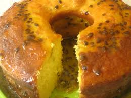
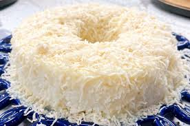

Receitas de bolos
Neste site veremos links para receitas
Bolo de morango
Bolo de maracuja

Bolo de tapioca

Bolo Teste
Bolo
Bolo
Teste
Bolo Teste SEPARADO
Você pode também acessar receitas de arroz na nossa
proxima página